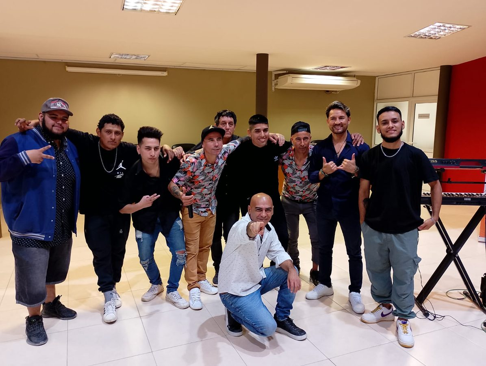
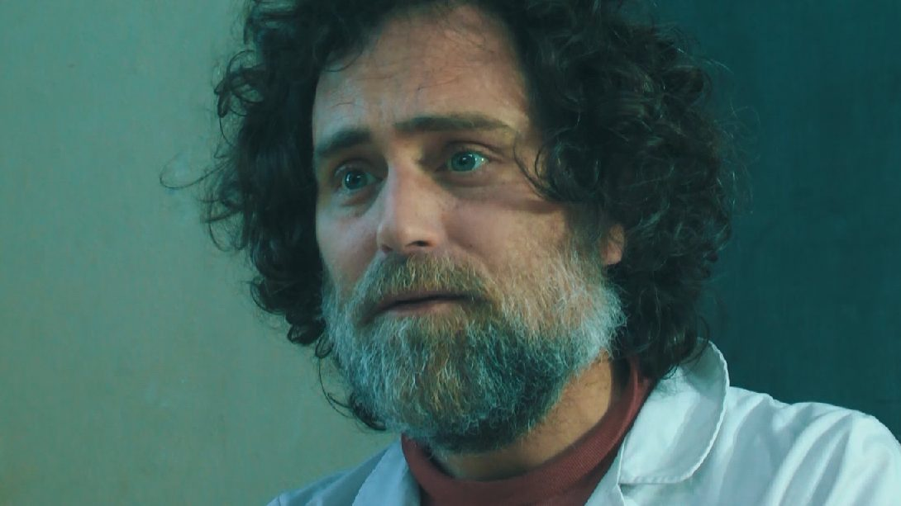
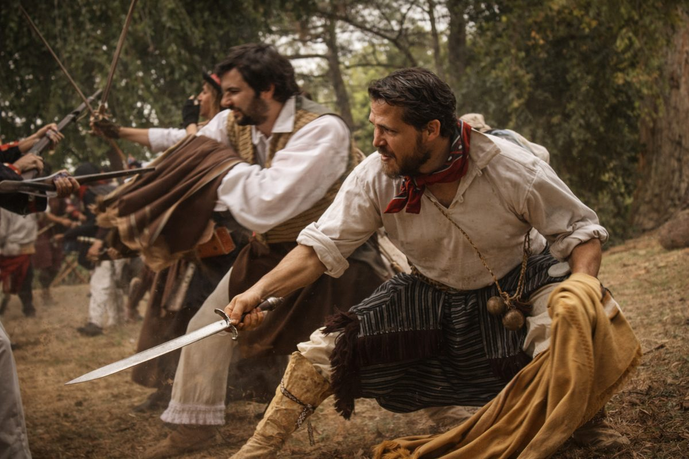

Producción Audiovisual Integral
Desarrollo, realización y posproducción de cine, series, documentales y formatos para televisión.
Cine · Series · TelevisiónSoluciones integrales para instituciones públicas, empresas privadas y realizadores independientes, con equipamiento propio y experiencia en producción regional.
Actividades documentadas en el Dossier institucional de Carrasco74.
Desarrollo, realización y posproducción de cine, series, documentales y formatos para televisión.
Cine · Series · TelevisiónCobertura en vivo vía satélite o red para eventos corporativos, festivales, congresos y espectáculos artísticos.
Señales en vivo · PlataformasServicios de estudio, registro de sonido directo, mezcla y masterización profesional.
Estudio · Sonido directoLogística, técnica, curaduría artística y producción ejecutiva de festivales y certámenes.
Festivales · CertámenesSistemas de sonido de alta potencia, iluminación DMX, cámaras de definición broadcast, estabilizadores y drones.
Sonido · Iluminación · ImagenDiseño de proyectos para leyes de mecenazgo, fondos de fomento y convenios institucionales.
Mecenazgo · Convenios


Las imágenes corresponden a producciones de Carrasco74 y se muestran como referencia visual de las áreas de trabajo.
Contanos qué necesitás producir y te respondemos por correo.